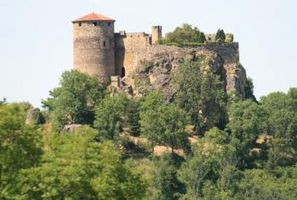
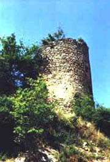

Recensement Jean-Claude Truffet
| Département | 63 — Puy-de-Dôme |
| Canton | St-Dier-d`Auvergne |
| Commune | St-Dier-d`Auvergne |
| Type d'édifice | Vestiges |
| Période d'origine | XII |


BOISSONELLE, avant 1049 est citée une famille avec Hugues de Bozartella. Vers 1104 a Pierre de Boscanelle. Au XIIIe siècle, le dernier des Boissonnelle, Adalard, seigneur de Sauviat, lègue Boissonnelle et Vaux-Méaudes aux Montboissier. En 1310, Eustache de Montboissier, son fils Eracle s'accordent avec l'évêque pour fixer les limites entre les châtellenies et Mauzun appartenant à l'évêque avec les mandements de Montboissier et de Boissonnelle. le Monteil et Aubusson. Ainsi la seigneurie de Boissonnelle s'étend sur le Cunlhat et Ceilloux, à ce noyau primitif s'était ajouté celui de Vauméode avec la Tour-de-Miodet à l'est de St Jean des Ollières. En 1350, Eracle de Montboissier meurt. En 1403. son fils, Louis de Montboissier, accepte de transiger avec les habitants de cinq de ses châtellenies: Aubusson, Boissonnelle, Montboissier, Le Monteil, Vauméode (Vaux-Méaude). Pierre de Montboissier marié an 1425 à Jeanne de Châtillon, récupère les fiefs, et il continue la lignée avec son fils Jean III, seigneur d'Aubusson puis de Boissonnelle. En 1553 et en 1568, François de Montboissier, chevalier de l'ordre du roi, gentilhomme, reçoit le titre de baron . En 1572, Gilberte de Montboissier porte la seigneurie en dot à Jacques de La Fin. Son fils, Alexandre de la Fin, seigneur d'Aubusson, Boissonnelle, Le Montel et Vauxméode, sans enfant, se dessaisit de tous ses biens en faveur de son épouse, Jacqueline de la Souchère. En 1624, la fille de celle-ci apporte le château à François de Beauverger. En 1711, Boissonnelle passe par mariage aux Montmorin.
Château des Martinanches classé Monument Historique en 1968.(voir article).
Boissonnelle change de propriétaire à chaque génération La terre est mentionnée, dès le XIe siècle, comme appartenant à Hugues Boissonnelle. De cette époque subsiste la motte castrale primitive, au sud du château en pierre.
Ruines du château de Boissonnelle (XIIe siècle) des XIIe et XIVe siècles à 5 km du bourg. A l'extrémité d'une large crête, une enceinte oblongue est défendue du côté de l'attaque par un donjon semi-circulaire haut de 15 mètres, percé d'une archère. Au donjon est accolé un logis de trois niveaux. Une tour semi cylindrique flanque l'angle sud-est et domine l'entrée dans la basse-cour. Celle-ci est accolée en contrebas à l'ouest, elle a été agrandie plus tard sur le flanc occidental. Aux XIXe et XXe siècles, le château-fort est vandalisé par des fermiers. Les derniers d'entre eux dépècent la ruine et vendent les fenêtres et l'escalier à vis avant de la céder à l'actuel propriétaire qui a entrepris d'importants travaux.
Famille de Louis de Montboissier
"
Vestiges du château de Boissonelle